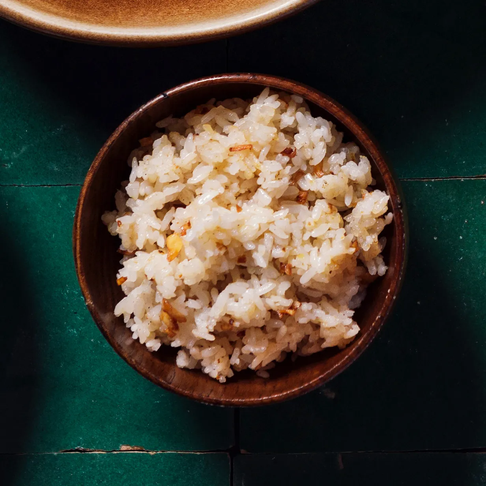

Garlic Fried Rice

Descriptions
Garlic fried rice - a staple filipino dish, honestly you can have it anytime - usually have it for breakfast
Ingridients
The ingridients are simple - we just have to make the garlic oil and basically fry the rice on it
- Garlic - I mean... loads.
- Oil - up to you, I tend to put at least 8 tsp, I drown the garlic in it, we are not going to use it all
but we can use it for other stuff!
- Rice - Again really depends on how much rice u got I would say 1 cup = 1 person
- Salt - Again, up to you!
- Scallion - For garnish - but you can cook the white side with the garlic
- Eggs (optional - but I really like adding it)
Instructions
- Cook rice (Preferably cold)
- Fry garlic in oil until its golden brown - Slow and steady, gotta get that garlic flavour into the oil
- Put the rice in and mix! put salt too
- If you do decide to put eggs, I'd put salt in the eggs then mix it here, you gotta mix it until the eggs are fried